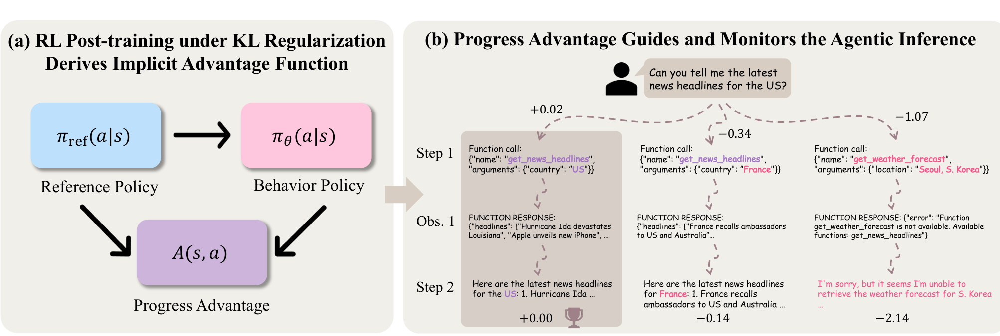
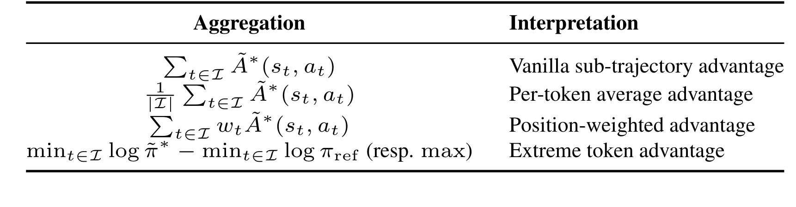
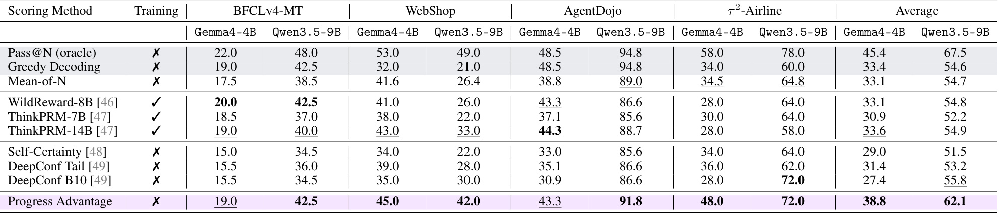
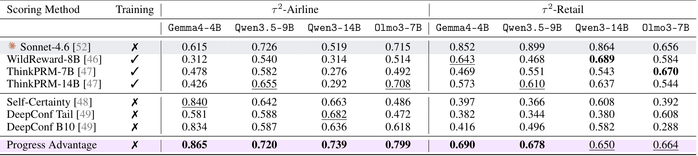
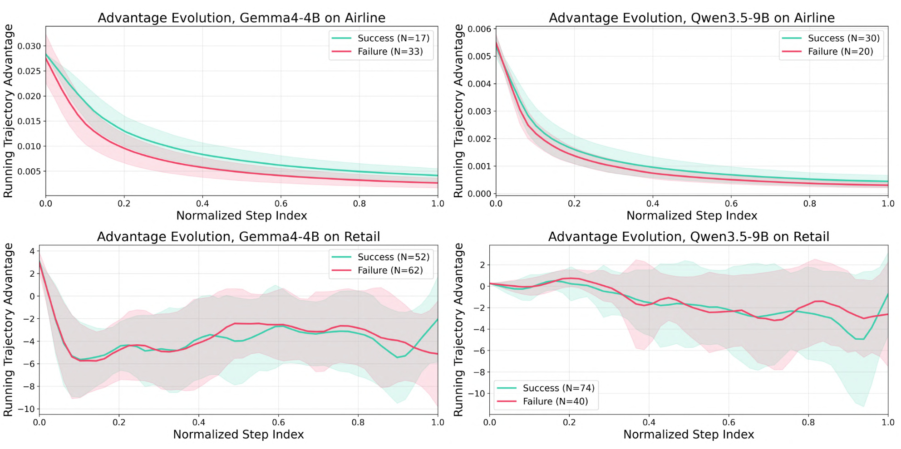
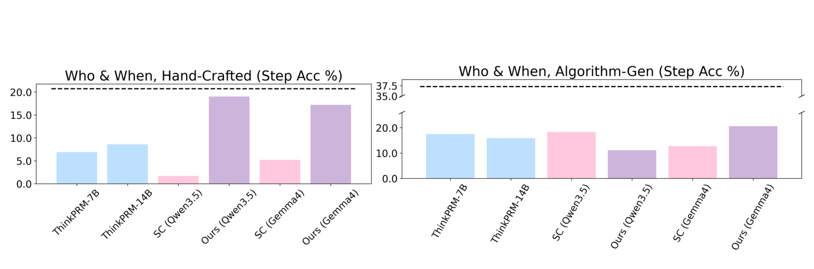
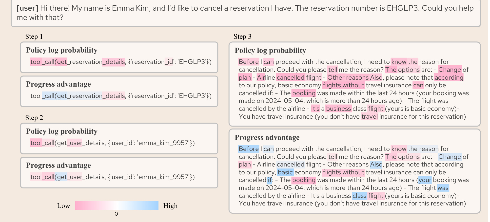
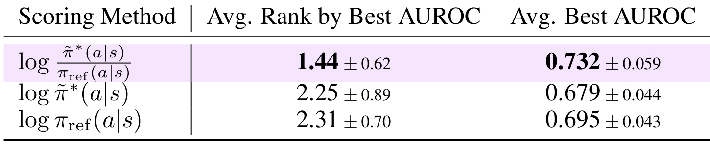
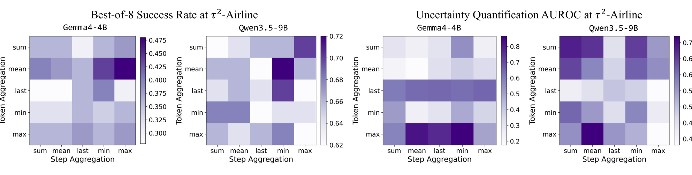
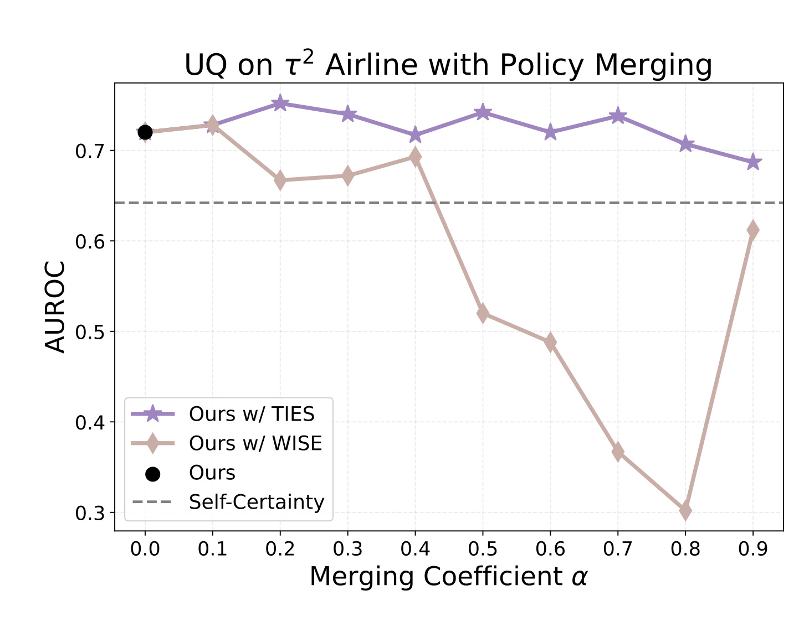

这篇论文提出 Progress Advantage：不用额外训练 process reward model，而是直接读取一个经过 RL post-training 的行为策略和它的 reference policy，对同一 action/token 的 log-probability 做差，把这个差值解释成 agent 在当前状态下“相对平均动作是否更有进展”的信号。论文一作 Changdae Oh 来自 University of Wisconsin-Madison，合作机构包括 Argonne National Laboratory；论文入口为 arXiv:2606.26080，项目页和代码仓库均已核验可访问，分别是 项目页 与 GitHub。
LLM agent 最需要逐步过程级评价的场景，恰恰也是最难训练 PRM 的场景：长轨迹、不可逆工具动作和随机环境反馈让人工 step 标注与 Monte Carlo 回滚都难以规模化。论文要解决的核心问题不是再训练一个专用 reward model，而是从 RL post-training 已经留下的 policy pair 中直接取出可用的进展信号。
1. 背景和问题
现在的 agent benchmark 已经不只是单轮文本补全。一个工具型 agent 会读用户请求、调用函数、接收环境返回、再继续规划下一步；网页购物、客户服务、多 agent 协作、代码执行和文件操作都属于这种长轨迹交互。这样的系统如果只看最终成败，问题会很粗：任务失败时，到底是第一步检索错了、某个工具参数错了，还是最后总结时把正确观测解释错了，最终 reward 都只能给一个二值或标量结果。Outcome reward model 可以告诉我们“这条轨迹最后好不好”，却很难告诉我们“哪一步正在变好、哪一步开始偏离目标”。
Process reward model 正是为了解决这个 credit assignment 问题。它在每个中间步骤上给分，理论上可以用于 best-of-N 轨迹选择、运行时监控、错误定位和在线干预。但 agentic setting 让 PRM 的构造成本突然变高。数学推理里可以对一个中间推理步骤做局部验证，甚至对剩余路径反复 rollout；agent 交互则会碰到 stateful environment。比如发错邮件、取消订单、删除文件、调用不存在的工具、查询错误国家的新闻，这些 action 会改变上下文，也可能不可逆。想对每个 step 做人工标注很贵，想用 Monte Carlo 从某一步回滚重试也不现实，因为环境反馈本身是随机的，且很多状态并不能被干净复现。
论文把这个矛盾描述成一个明显的缺口：最需要 process-level evaluation 的 agent，恰好也是最难收集 process supervision 的对象。已有 PRM 往往还存在 domain-specific 的问题。一个模型在数学推理或某个客服环境里学到的 step verifier，不一定能迁移到 WebShop、BFCL tool calling、AgentDojo 或 multi-agent failure attribution。即便训练集足够大，模型也可能把“语言上自信、格式上流畅”错当成“任务上有进展”。
Progress Advantage 的出发点很务实：既然很多 LLM agent 已经经历了 RL post-training，那训练过程里通常就会同时保留两个 checkpoint 或 policy 角色，一个是经过 RL 的 behavior policy，另一个是作为 KL regularization anchor 的 reference policy。传统上这个 reference policy 主要用于防止 RL 后的策略偏离太远；这篇论文则问，二者的差异是不是已经编码了“哪些 token/action 被 RL 强化、哪些被 RL 压低”。如果能把这个差异拿出来做 scoring，就不需要额外收集 step label，也不需要训练一个新的 PRM。
这里的关键不是简单地说“RL 之后概率更高的 token 就更好”。单独看行为策略的 log probability 很危险，因为高概率可能只是语言模型本来就觉得某个词常见、某个模板流畅，而不代表任务更接近成功。论文强调的是 RL-trained policy 与 reference policy 的 log-probability ratio：同一个 state-action 下，如果行为策略相对 reference 更愿意产生这个 action，就说明 post-training 把它从基线里“抬高”了；如果行为策略相对 reference 反而压低它，就说明这个 action 可能不符合 RL 后的目标偏好。这个相对量才有机会摆脱一般语言流畅性的干扰。
这也是论文标题里“free lunch”的含义。它不是说 scoring 没有推理成本；实际上要同时跑 behavior/reference 两个模型取 logprobs，成本并不为零。它说的是 监督信号本身来自 post-training 的副产物：不用为每个 agent 环境重新训练 PRM，不需要 step-level human annotation，也不需要 task-specific reward-model data。只要有合适的 RL-trained/reference policy pair，就可以在推理期构造一个过程级分数。
这个思路与推荐系统和大模型应用都有关系。推荐系统里常见的在线策略也会面对 delayed reward、长链路 credit assignment 和行为策略/reference 策略差异；LLM agent 场景则把这些问题搬到了 token/action 级别。论文真正值得读的地方，是它没有停留在经验启发，而是先说明 deterministic implicit reward 公式为什么在随机 agent 环境里不够，再把目标从“恢复绝对 reward”换成“恢复 advantage”，最后证明 log-ratio 正好对应 optimal advantage。这个转向决定了整篇论文的技术骨架。
2. 方法
2.1 从 KL-regularized post-training 说起
论文先把常见 RL post-training 写成一个统一目标。行为策略 $\pi_\theta$ 生成 action，reference policy $\pi_{\mathrm{ref}}$ 作为 KL 约束的锚点，优化目标是在获得任务 reward 的同时，不要让策略离 reference 太远：
符号解释：$s_t$ 是 agent 在第 $t$ 个 token/action 位置看到的完整上下文状态，$a_t$ 是它生成的 token 或动作，$r(s_t,a_t)$ 是该动作带来的 reward，$\beta$ 控制策略偏离 reference 的惩罚强度，$\rho$ 是初始任务分布。这个式子说明，RL post-training 并不是只让模型追求 reward，而是在 reward 与“别离开原策略太远”之间做权衡。reference policy 可以是 pre-trained/base checkpoint、SFT checkpoint，或者 online RL 中上一轮策略。如果只在 deterministic text completion 上看，这个目标会导出一个漂亮的 implicit reward 结果，最优策略的 log-ratio 可以被写成奖励本身：
符号解释：$\pi^*$ 是满足 KL-regularized 目标的最优策略，$\pi_{\mathrm{ref}}$ 是 reference policy。这个式子直觉很强：如果 post-trained 策略相对 reference 更偏好某个动作，说明该动作隐含 reward 更高。但论文指出，这个旧式 implicit reward 依赖 deterministic transition。在 agent 环境里，下一状态不只是把 token 拼到上下文后面，还会混入工具返回、用户回复、环境噪声和外部状态，所以不能直接照搬。
2.2 随机 MDP 下为什么不能恢复绝对 reward
论文把 agent 建模为 token-level stochastic MDP。状态 $s_t$ 包含已有对话、工具调用和环境观测；action $a_t$ 是 agent 生成的 token/action；状态转移 $f$ 在普通 token 生成时近似拼接上下文，在 action 触发工具或环境反馈时则是随机转移。Bellman 方程里，下一状态 value 会以期望形式进入：
符号解释：$Q^(s_t,a_t)$ 是从当前 state-action 出发的最优 action value，$V^(s_{t+1})$ 是下一状态价值，$\mathbb{E}{s$ 表示下一状态来自随机环境转移。这个式子的重点是，agent 的一个动作不只带来即时 reward，还改变下一状态的价值分布。只要 $f$ 是随机的，未来 value 的期望项就不能像 deterministic setting 里那样干净抵消。论文在 Remark 1 中把这个残差写出来：}\sim f
符号解释：右侧第一项是 policy log-ratio，第二项 $V^(s_t)$ 是当前状态价值，第三项是动作后随机下一状态价值的期望。这个式子说明，log-ratio 不再等于绝对 reward；它少了或混入了当前状态与下一状态之间的 value residual。对 agent 来说，这个 residual 正是环境随机性、工具返回和外部反馈带来的部分。由于 $V^$ 不能只从两个 checkpoint 的 token probability 里直接读出来，用 policy pair 恢复 exact reward 是不可能的。
这个失败并不是坏消息，而是论文方法的转折点。作者没有继续追求绝对 reward，而是换成 advantage。Reward 会混合“这个状态本来容易还是困难”和“这个动作质量好不好”；advantage 则问，在同一个状态里，这个动作比平均动作好多少。对推理期 scoring 来说，后者更有用，因为我们经常要比较不同 step 的相对进展，而不是估计一个可解释为真实环境 reward 的标量。
2.3 Progress advantage 的核心推导
论文的 Proposition 1 给出核心结论：在 KL-regularized RL objective 下，最优 advantage 可以由 RL-trained policy 与 reference policy 的 log-ratio 精确恢复。 这个结论是全文的中心，因为它把目标从恢复绝对 reward 改成恢复同一状态内的相对动作质量：
符号解释：$\tilde{\pi}^$ 是 RL-trained optimal behavior policy，$\pi_{\mathrm{ref}}$ 是 reference policy，$\tilde{Q}^(s,a)$ 是考虑 KL-regularized objective 后的 action value，$\tilde{V}^(s)$ 是同一状态下的 value，$\tilde{A}^(s,a)$ 是 action 相对该状态平均行为的 advantage。这个公式是论文最关键的地方：它不说 log-ratio 是 exact reward，而说 log-ratio 是 exact advantage。随机环境的影响已经进入 $Q$ 和 $V$，但二者相减后，共享的状态难度被归一化掉，剩下的是 action 的相对优劣。
更完整的证明在附录里。作者从 per-state 的 soft Bellman objective 出发，在固定最优 $Q^*(s,a)$ 的情况下，对策略分布做拉格朗日优化。局部目标可以写成“选择一个动作分布，使 expected $Q$ 高，同时不要偏离 reference 太多”。解出来的最优策略是：
符号解释：$Z(s)$ 是归一化项，保证所有 action probability 加起来等于 1；$\exp(\tilde{Q}^*(s,a)/\beta)$ 让高 value action 相对 reference 被放大。这个表达强调 reference policy 不是一个事后 baseline，而是最优策略分布的一部分：高 value action 必须先相对 reference 被重加权，再经由 $Z(s)$ 归一化。把它取 log 并整理，就得到：
符号解释：$\beta\log Z(s)$ 只依赖状态 $s$，不依赖具体 action。作者进一步证明 $\tilde{V}^(s)=\beta\log Z(s)$，于是右侧就变成 $\tilde{Q}^(s,a)-\tilde{V}^*(s)$。这一步把 reference-normalized log probability 与 advantage 接上。直觉上，reference policy 给出“RL 前或前一阶段模型本来会怎么做”，RL-trained policy 给出“经过目标强化之后更愿意怎么做”，二者的 ratio 就是 RL 后对这个 action 的相对偏好提升。

Figure 1 把这个推导和推理期用途放在同一张图里。左边的三角关系是本文方法的最短版：reference policy 与 behavior policy 之间的差异，被解释成 $A(s,a)$，也就是 progress advantage；右边用新闻查询的工具调用例子说明这个信号如何沿 agent trajectory 打分。正确调用美国新闻工具的路径得到接近正向或较高的分数，查询法国新闻或调用不存在天气工具的路径得到负分。这里的数字不是单独 behavior policy 的自信程度，而是 behavior 相对 reference 的提升或压低。图中最值得注意的是，这个 scoring 不需要另一个 PRM 去读完整轨迹再判断，它只需要两个 policy 对同一生成 action 的 log probability。对于实际系统，这意味着可以把已有 post-training checkpoint pair 接到 inference logprob pipeline 上，得到 step-level 和 trajectory-level 的监控信号。它也解释了为什么本文要用 advantage 而不是 reward：右侧同样是工具调用动作，不同状态下任务难度和反馈不同，直接比较 reward 会混淆状态难度；advantage 则把“在当前状态里这个动作是否更像 RL 后策略认为有进展的动作”提取出来。
论文还补充了 clipping-based RL 的覆盖范围。很多现代算法不是显式加 KL penalty，而是用 PPO/DAPO/Dr. GRPO 一类 clipping surrogate。作者用 importance ratio 说明，只要每个样本上 $R(s,a)$ 被限制在 $[1-\varepsilon,1+\varepsilon]$，策略就局部落在 KL trust region 里：
符号解释：$R(s,a)$ 是目标策略相对 reference 的 importance ratio，$\varepsilon$ 是 clip 范围，$D_{\mathrm{KL}}$ 是策略分布距离。这个结果并不等于说 clipping 方法严格优化了同一个显式 KL objective，而是说在小 clip 区域附近，它也会产生局部 KL-constrained 的策略。因此 progress advantage 的使用范围不只限于 GRPO/PPO 这类显式 KL 训练，也可以覆盖许多实际 post-training pipeline。
2.4 从 token 信号到 agent 轨迹分数
公式只给了 token/action 级别的 advantage。要在 agent 应用里使用，还需要做三件事：选 policy pair、把 token advantage 聚合成 step 或 trajectory 分数、决定 log probability 的表示形式。policy pair 的选择最直接：behavior policy 是 RL 后模型，reference policy 可以是 base、SFT 或上一轮 checkpoint。关键边界是 reference 不能太远也不能太近。太远时 log-ratio 会被通用分布差异主导，比如 base 模型与 instruction/RL 模型在格式、口吻、模板上的差异；太近时 ratio 太小，分不出好动作与坏动作。

Table 1 列出了几类 sub-trajectory aggregation。直接求和对应轨迹 advantage 的可加性，但长轨迹可能自然得到更大绝对值；平均值做了长度归一化，更适合比较不同长度的 agent run；position-weighted 允许按任务知识加权某些 token 或 step；min/max 这类 extreme token aggregation 则把局部最差或最好 token 当成关键证据。这个表看起来简单，但它决定了 progress advantage 能不能落到三类应用：test-time scaling 需要给整条候选轨迹排序，UQ 需要把整条轨迹压成 success/failure 可分的 scalar，failure attribution 则需要保留 step-level 的局部低谷。论文后面的热图会证明，没有一个聚合方式对所有任务都最优。实现上，默认 progress advantage 直接使用 realized token 的 log probability 差；如果担心单个 token probability 太尖锐，作者还测试了 top-k smoothing 变体：
符号解释：$A[i]$ 表示当前状态下第 $i$ 个 top-k token，$k$ 是平滑宽度。这个式子不只看实际生成 token，而是看 top-k token 集合的平均 log probability 差。论文实验显示，默认版本在 TTS 和 UQ 上已经很强，top-k 变体在部分 failure attribution 设置中可能更好，因为错误定位更依赖局部 step 的稳定性。
3. 实验结果
3.1 Test-time scaling：在 best-of-N 里选哪条轨迹
test-time scaling 的协议很直接：对同一个任务 prompt 采样 $N=8$ 条候选轨迹，给每条轨迹算一个 reward/score，然后选择得分最高的一条作为最终执行结果。论文使用的选择形式可写成：
符号解释：$s$ 是任务 prompt，$\mathcal{T}$ 是同一个模型在温度 $c$ 下采样出的 $N$ 条候选轨迹，$r(s,\tau)$ 是 scoring method 对整条轨迹的分数，$\tilde{\tau}$ 是被选中的轨迹。这个设置考验的是 scorer 是否能在多个候选里挑出更可能成功的那条，而不是模型本身是否一次贪心解码就成功。

Table 2 是第一类应用的主结果。Pass@N 是 oracle 上界，表示 8 条候选里只要有一条成功就算可达；Mean-of-N 是随机挑候选的平均水平；Greedy Decoding 是零温确定性生成。Progress Advantage 在 Gemma4-4B 平均 38.8、Qwen3.5-9B 平均 62.1，明显超过 Self-Certainty、DeepConf Tail/B10 等 confidence-only 方法，也超过 WildReward-8B、ThinkPRM-7B/14B 这类外部 reward/prm baseline 的多数平均结果。更重要的是，它不需要 task-specific training。WebShop 上 Qwen3.5-9B 从 Greedy 21.0 提到 42.0，tau2-Airline 上 Gemma4-4B 从 Greedy 34.0 提到 48.0，这说明探索采样本身确实产生了更好的候选，而 progress advantage 能较好识别这些候选。AgentDojo 上提升不总是超过所有 baseline，说明它不是万能 reward；但作为不训练新 PRM 的 scorer，它已经能把 RL 后 policy pair 中的偏好差异转成可用的排序信号。
从工程角度看，TTS 是 progress advantage 最自然的第一落点。它不需要在线中断 agent，也不需要精准定位哪一步错，只要能对候选轨迹给出相对排序即可。代价是要对每条候选轨迹在 behavior 和 reference policy 上各跑 logprob 评估；如果模型大、候选多，推理成本接近翻倍。但相较于训练 task-specific PRM，这个成本更像是部署期算力开销，而不是数据标注和训练开销。
3.2 Uncertainty quantification：把轨迹分数当成成败置信度
第二类应用是 trajectory monitoring。给定一条已经生成的 greedy trajectory，scorer 不再从候选里选最优，而是预测这条轨迹最终会成功还是失败。论文用 tau2-bench Airline 和 Retail 两个领域，指标是 AUROC。这里的难点在于 agent 轨迹中很多局部语言都很流畅，单独 confidence 可能只反映模型对常见表达的自信，而不是任务约束是否满足。

Table 3 显示 Progress Advantage 在 tau2-Airline 上表现尤其强：Gemma4-4B 达到 0.865，Qwen3-14B 达到 0.739，Olmo3-7B 达到 0.799；tau2-Retail 上虽然不是所有 backbone 都最高，但整体仍比许多 pretrained reward model 和 confidence baseline 更稳。一个重要对比是 Sonnet-4.6 judge 在 Retail 部分很强，但它是强 proprietary judge；Progress Advantage 使用的是 agent 自己的 policy pair，不需要把轨迹交给另一个大模型读完再判断。对于运行时监控，这种自包含信号有部署优势：可以和 agent inference 同一套模型族、tokenization 与 logprob pipeline 结合起来。
论文还做了 cross-policy scoring：用 Gemma4-4B 作为 reward model 去评估 Qwen3.5-9B/Qwen3-14B 生成的轨迹，Progress Advantage 仍能取得 0.754 和 0.727 的 AUROC。这一点说明它不完全依赖“同一个模型生成自己的轨迹”，而更接近一种 checkpoint-pair 诱导出的过程评价器。不过这种跨模型用法需要小心，因为 tokenization、chat template 和 action 表达差异都会影响 logprob 的可比性。

Figure 9 是 UQ 的进一步拆解。Airline 任务中，成功组和失败组的 running trajectory advantage 从早期就有分离趋势，尤其 Gemma4-4B 与 Qwen3.5-9B 的 Airline 曲线中，成功组整体高于失败组。Retail 则更复杂：曲线波动大、方差宽，成功/失败组不总是清晰分开。这提醒我们，progress advantage 的 UQ 能力不是所有环境里都同样干净；当任务策略、用户模拟或环境反馈让“早期进展”与“最终成功”关系变弱时，trajectory-level aggregation 可能需要 domain-specific 调整。换句话说，它不是把 agent monitoring 问题彻底解决，而是提供了一个比 confidence 更贴近任务进展的默认信号。
3.3 Failure attribution：哪一步造成了决定性错误
第三类应用是 failure attribution。这里输入是一条失败轨迹，目标不是判断成败，而是定位 decisive error step。论文在 Who & When benchmark 上评估，比较 Self-Certainty、Progress Advantage 和专门为这个任务训练的 AgenTracer。Progress Advantage 的做法是把 step-level score 里最可疑的位置映射到错误步，直觉上如果某一步相对 reference 被 RL-trained policy 显著压低，它可能就是 agent 偏离任务目标的地方。

Figure 2 的两个柱状图分别对应 hand-crafted 和 algorithm-generated failure trajectories。Self-Certainty 的表现很弱，尤其在手工轨迹里只有个位数或较低准确率；Progress Advantage 明显更接近 dashed line 所代表的 AgenTracer。AgenTracer 是专门用 failure attribution 数据训练过的 baseline，而 progress advantage 没有使用 step-level failure annotation，这一点是结果的核心。它说明 log-ratio 不只适合给整条轨迹排序，也能在 step-level 上提供错误定位线索。图里仍能看到距离：在 algorithm-generated 设置里，AgenTracer dashed line 远高于所有无需训练的信号，说明如果目标是极高精度 failure attribution，专门训练的模型仍有价值。Progress Advantage 更像一个低标注成本的第一层定位器，可以帮助日志筛查、报警定位和人工回放缩小范围。
failure attribution 对 aggregation 的要求也更苛刻。TTS/UQ 可以把整条轨迹压成一个 scalar，FA 则必须保留 step 序列，并决定用 minimum、maximum、last、mean 或 top-k smoothed signal。论文附录中 top-k progress advantage 在部分 FA 设置超过默认版本，这说明错误定位可能更容易受单 token 噪声影响。工程部署时，如果要用它做自动阻断或回滚，不能只照搬主表的默认聚合，需要在目标任务日志上做 calibration。
3.4 为什么 log-ratio 比单独 log probability 更可靠
论文用一个 token-level case 说明单独 behavior policy log probability 的问题。agent 被要求取消一个 reservation，但 policy constraints 里包含不能取消的条件。单独 policy log probability 往往偏向常见、流畅、模板化的词，例如礼貌询问、常见选项或自然语言连接词；Progress Advantage 则会把与任务目标和约束真正相关的 token/action 抬高或压低。

Figure 3 左侧展示 tool-call token，右侧展示自然语言回复。颜色代表低到高的信号强度。关键差异在于，policy log probability 会对一些常见 token 或模板化文本给出较高概率，但 Progress Advantage 更能突出符合任务约束的部分，例如需要获取 reservation/user details 或正确说明 cancellation 条件。它不是在问“这个 token 在语言模型里常不常见”，而是在问“RL 后的 behavior policy 相对 reference 有没有更偏好这个 token”。这正是 log-ratio 的作用：reference policy 承担了语言先验和格式先验的基线，behavior policy 相对它的变化更接近 post-training 学到的 goal-directed preference。对 agent 来说，这比单独看自信度更重要，因为很多错误动作也可以非常自信、非常流畅。

Table 11 把这个直觉量化了。作者在八个 UQ 场景和 25 种 token/step aggregation 组合上比较三种信号：完整 log-ratio、只用 behavior policy log probability、只用 reference policy log probability。Progress Advantage 的平均 rank 是 1.44，平均 best AUROC 是 0.732；单独 behavior log probability 的平均 rank 是 2.25，平均 best AUROC 是 0.679；单独 reference log probability 是 2.31 和 0.695。这个结果说明，两个 ingredient 单独拿出来都不是可靠 reward。behavior policy 自身混合了语言流畅性和 RL 偏好，reference policy 更接近基线语言先验；只有二者相减，才把“post-training 后被强化的相对变化”凸显出来。也正因为如此，progress advantage 的信号意义不能简化成“模型越自信越好”。

Figure 4 说明 aggregation 不是细枝末节。横轴是 step aggregation，纵轴是 token aggregation；左侧是 best-of-8 success rate，右侧是 UQ AUROC。不同模型和任务的最优格子不一样：best-of-N 中某些场景偏好 mean/min 或 mean/max 组合，UQ 中 extreme token 再配合 mean step 可能更有信息。直觉上，TTS 需要挑出整条轨迹总体更好的候选，过度关注单个坏 token 可能误杀；UQ 则可能需要抓住轨迹中最能代表风险的局部 token 或 step。论文没有给一个万能公式，而是把 progress advantage 定义为基础 token signal，再承认实际应用要选 aggregation recipe。这一点很诚实，也很实用。

Figure 5 进一步说明 reference policy 的选择会改变信号质量。作者把 Qwen3.5-9B-Base 与 Qwen3.5-9B 在权重空间做 merging，构造一系列不同距离的 reference policy。图中 TIES merging 的若干系数明显高于 Self-Certainty dashed line，也高于原始 reference 的黑点；WISE merging 则在某些系数下快速下降。这说明 reference 不是随便选一个 base checkpoint 就万事大吉。太远的 reference 可能把通用 instruction tuning 或格式差异混入 log-ratio；太近的 reference 则会让差值变小，失去区分度。更好的 reference 可能来自 model merging、intermediate checkpoint 或训练日志中的上一轮 policy。工程上，谁能拿到更合适的 checkpoint，谁就更容易把 progress advantage 做稳。
论文最后还报告了资源成本。要复现 TTS/UQ/FA 及 ablation，需要成对加载 behavior/reference 模型；Table 14 提到 bf16 下 Qwen3.5-9B pair 约 36GB，Qwen3-14B pair 约 56GB，Gemma4-4B pair 约 16GB。作者估算 TTS sweep 约 26 A100-hours，UQ 约 16，FA 最多约 4，总量约 46 A100-hours。这个成本不是小数，但它换来的是不训练 PRM、不收 step labels，并能跨多个 benchmark 直接评估。
4. 总结
4.1 我的判断
这篇论文的主要贡献，是把“post-training 留下的 policy pair”从训练约束工具变成推理期过程评价工具。最值得记住的不是某个单表提升，而是概念转换：在 stochastic agent MDP 中，log-ratio 不能恢复 exact reward，但可以恢复 optimal advantage。这个转换避免了 reward residual 的陷阱，也让信号更适合 step-level 比较。对实际 agent 系统来说，Progress Advantage 可以作为一个默认 process scorer：先用它做 best-of-N reranking、trajectory monitoring 和失败日志定位，再决定是否值得训练更贵的 task-specific PRM。
我认为它最适合三类场景。第一，已有 RL checkpoint pair 且能稳定导出 token logprobs 的系统，可以很快做离线日志打分。第二，有多候选采样或搜索流程的 agent，可以用它做轻量 reranker。第三，安全监控和失败诊断中，可以用 running advantage 找到疑似错误 step，减少人工排查范围。它不适合的场景也很明确：没有 reference checkpoint、只开放 API 且拿不到 logprobs、工具动作不是 token 化生成、或者任务成败与局部 token advantage 关系很弱的系统。
4.2 工程启发与复现建议
复现时最先确认四件事。第一，behavior/reference policy 的 tokenizer、chat template、action serialization 要一致，否则 log-ratio 可能比较的是格式差异。第二，日志要保存完整 generated tokens 与对应 state/context，不能只保存最终文本；progress advantage 是 token/action 条件概率，不是事后文本分类。第三，聚合策略要按任务调参：TTS 先试 mean/sum 类 trajectory score，UQ 可以试 max/min token 加 mean/last step，FA 要保留 step-level 序列并评估定位误差。第四，reference policy 的距离要校验，最好在一小批人工或已知结果日志上画出 success/failure 曲线和 AUROC，而不是默认 base checkpoint 一定最优。
如果把它接进线上 agent，我会把它放在“只读监控和候选选择”阶段，而不是一开始就让它自动阻断用户操作。原因是 progress advantage 仍然是从最优性假设和 checkpoint pair 里推导的 proxy signal，不是真实环境 reward。更稳妥的路径是：先做离线 replay，比较它与最终成败、人工错误标签、工具异常的相关性；再把低 advantage step 作为日志标记；最后才考虑在高风险 action 前做二次确认或调用更强 verifier。
4.3 局限与后续跟进
局限至少有四点。第一，理论里使用 optimal policy 和 KL-regularized objective，现实中的公开 post-trained 模型未必严格满足；作者也承认 public checkpoint 缺少完整 training log，近似质量需要 controlled experiment 验证。第二，reference checkpoint 可得性是硬门槛，很多商业模型只开放最终模型，不开放 base/SFT/intermediate policy。第三，显存和推理成本接近 policy pair 成本，尤其 14B 以上模型成对加载会限制在线使用。第四，aggregation 与 reference choice 明显影响效果，跨任务迁移时不能不校准。第五，在 Retail 这类曲线波动大的环境里，running advantage 对成功/失败的分离不总是干净，说明它仍受任务结构和环境反馈噪声影响。
后续值得跟三条线。第一，controlled RL 实验：保存每轮 checkpoint、真实 reward、advantage estimate 和环境随机性，直接验证 log-ratio advantage 与真实 advantage 的偏差。第二，在线 intervention：不仅在事后预测失败，还在低 advantage step 出现时触发反思、重采样、工具参数校验或人工确认。第三，reference policy construction：系统研究 base、SFT、previous-round checkpoint、model merging 和 LoRA adapter rollback 哪种 reference 更稳。第四，把方法扩展到非文本或 multimodal agent，只要 action probability 可取、policy pair 可得，advantage 公式本身不依赖文本模态。第五，和 task-specific PRM 结合：Progress Advantage 可作为弱标签、reranking prior 或 failure mining 工具，降低专用 PRM 的标注成本。
总体来说，Progress Advantage 给了一个非常清晰的工程方向：不要一上来就假设 process reward 必须重新训练；先检查 RL post-training 已经留下了什么。它的优势在于 annotation-free、domain-agnostic 和理论解释干净；风险在于对 checkpoint pair、logprob infrastructure 和 aggregation calibration 的依赖。把它理解成“免费 PRM”会过度乐观；把它理解成“从 RL checkpoint pair 中提取 advantage-shaped process signal 的方法”，更接近这篇论文真正的价值。